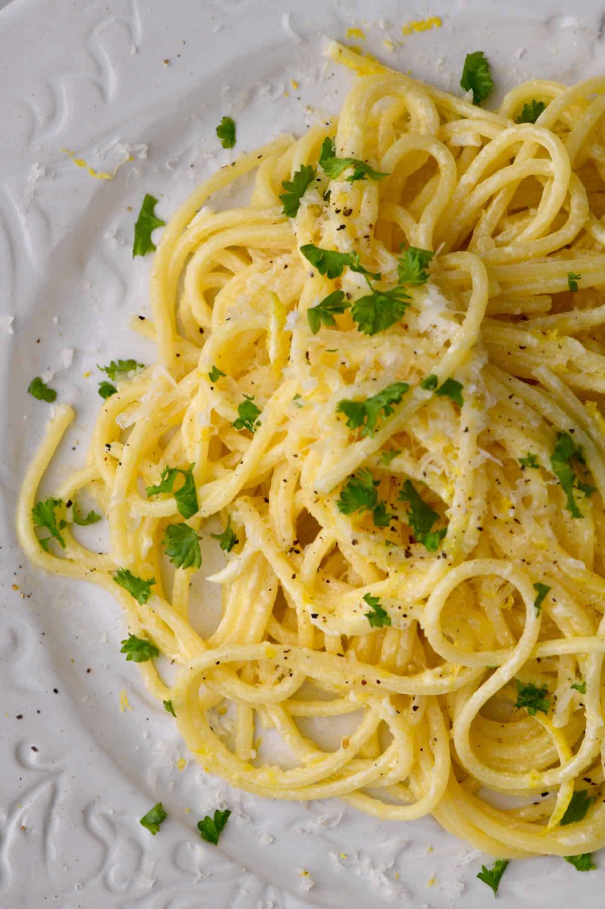

Basic Pasta
Basic Pasta

Ingredients
Dried Pasta... any work well |
Water |
Salt |
Tomato Pure |
Cheese/Tuna/Both/None :) |
Method
1)Boil your pasta adding salt to the water for later on. |
2)While pasta is cooking grate your cheese/drain your tuna. |
3.)When the pasta is cooked add about half a tube of tomato puree, stirring well, to give you a passata consistency. Of course you can just use passata if you want, and drain the pasta instead. |
4.)Then, add the tuna if using any, stirring it in well. Leave for a minute to heat up the tuna. Add salt/pepper to taste. |
5.)Serve into a bowl and sprinkle lots of cheese on top :) |
Enjoy! |
This can be enjoyed as a simple tomato pasta, or with cheese or tuna, or both :)